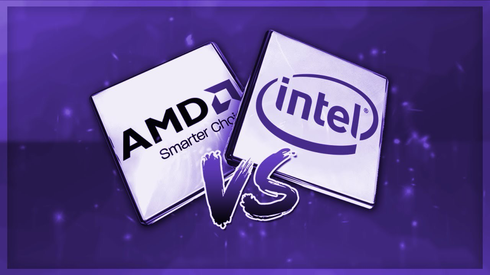
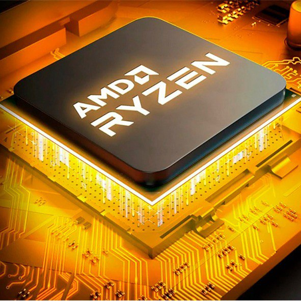
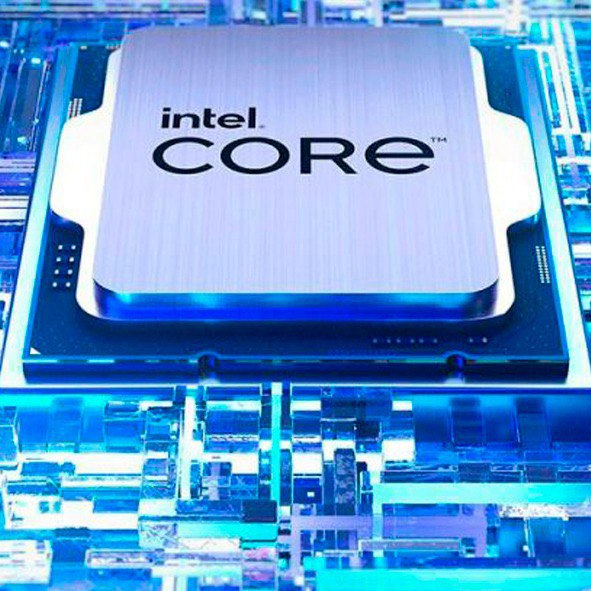

AMD или Intel: чьи процессоры лучше?
Независимо от того выбираете ли вы процессор для простого офисного ПК,
игрового компьютера или мощной рабочей станции, у вас есть только два варианта — AMD или Intel.
Противостояние этих гигантов породило почти религиозное поклонение одному из лагерей и непримиримую
войну фанатов и вечные споры о том, что лучше — AMD или Intel.
Что же выбрать?

